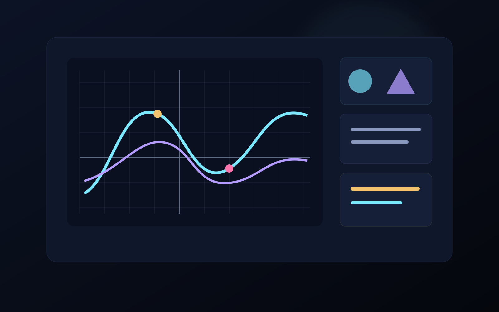

Interactive graphs
Change parameters and see the function respond immediately.
A visual learning environment for students. Instead of treating a function as a line of symbols, students can change parameters, watch the graph respond, practise step by step and get immediate feedback.

The product is built around interactive graphs, guided practice, visual question analysis and immediate feedback so mathematical ideas become easier to inspect and manipulate.
Change parameters and see the function respond immediately.
Work through exercises in steps with feedback and progress.
Bring in a question and turn it into a clearer visual plan for solving it.
The central direction is intuitive understanding: make relationships visible, show movement and let the student interact with the mathematical structure.
As the product develops, this page can expand with real product screens, exercises and public learning examples without changing the overall visual identity.